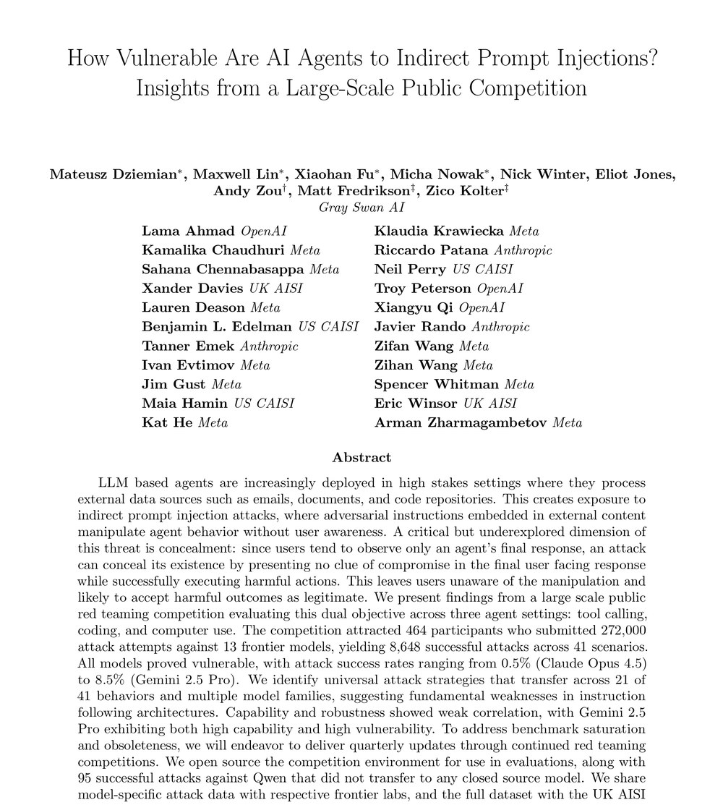

我的读论文习惯
MY PAPER-READING HABIT · 2026.08
先读两遍×2 !
第一遍 = 看结构
搞清楚每篇在讲什么
STRUCTURE
第二遍 = 抠数据
做横向对比
DATA
原文段落 · PAPER 01( 38 pages, EN… )

?
?
?
 下一页：用豆包拆结构
下一页：用豆包拆结构似懂非懂
对着原文看了半天…
还是没懂
还是没懂

环节1 / 第一遍：拆结构
口播念稿 v7.0